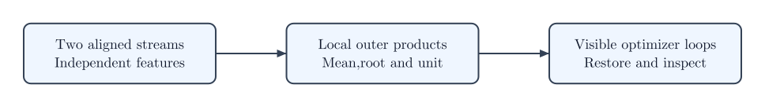
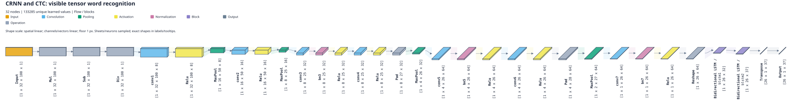
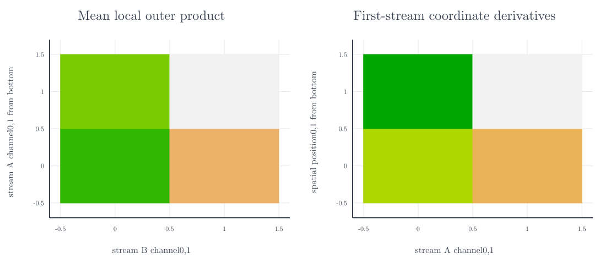
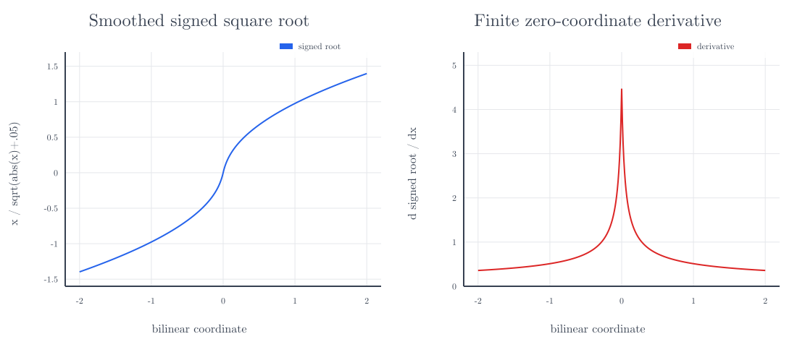
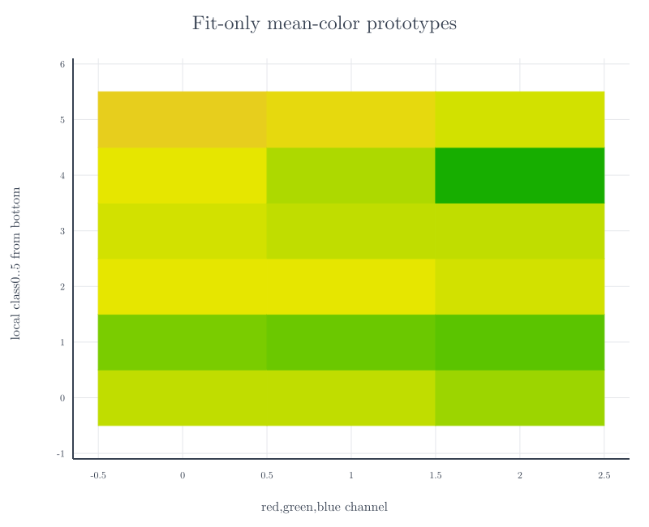
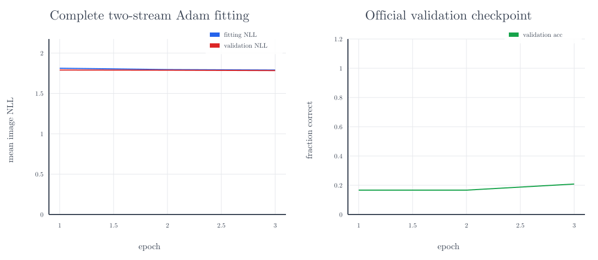
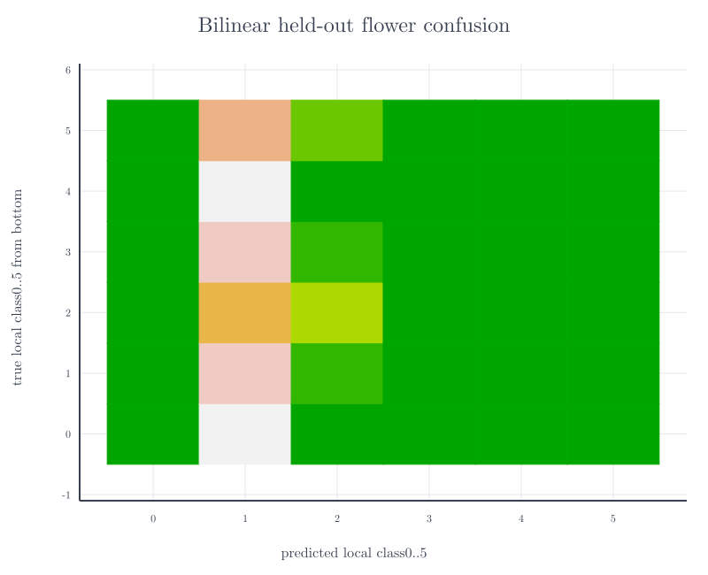
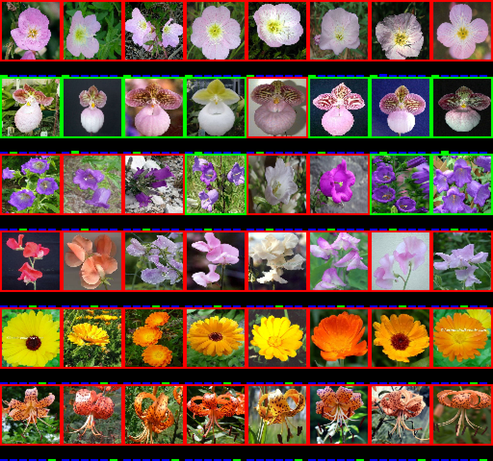
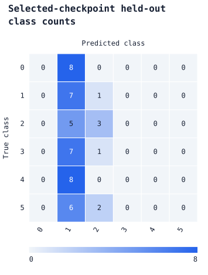

Bilinear CNNs on actual flower photographs
Abstract
Aligned local feature interactions combine two independent VGG-style streams. Hand outer-product and signed-root derivatives,full model execution and actual official-split flower images precede explicit SGD color fitting,visible complete-model Adam and independently restored RGB-only predictions.
Source example: examples/cpp/source/nn/1_convolutional_neural_networks/1.8_other_vision_tasks/bilinear_cnn.cpp.
The method
Average aligned local outer products before smoothed signed-root and unit normalization,then optimize a classifier. Keep the two feature streams independent,fit only the official training subset,and select a checkpoint using separate official validation images.
The concept diagram below is drawn by dm::graphics::Diagram. Its editable C++
source is the complete block below; regeneration uses the same datamunge toolchain
as the numerical examples. Exports consume the saved local SVG.
#include <dm/dm.hpp>
int main() {
std::filesystem::create_directories("build");
dm::graphics::Diagram diagram;
diagram.node("n0", {0.0, 0}, "Two aligned streams\nIndependent features");
diagram.node("n1", {5.2, 0}, "Local outer products\nMean,root and unit");
diagram.node("n2", {10.4, 0}, "Visible optimizer loops\nRestore and inspect");
diagram.edge("n0", "n1").edge("n1", "n2");
diagram.save_svg("build/bilinear_cnn_concept.svg");
}
Executed tensor architecture
This figure executes the inference configuration shown in the code, using a zero-valued shape probe without fitting or loading a checkpoint. Named stage boundaries group whole subgraphs where available; other nodes retain functional-layer detail. Exact batch-inclusive shapes and reachable parameter totals come from the trace. Shared linear scales map spatial dimensions and channel counts to blocks; the one-pixel visibility floor is disclosed in the legend. Labels use compact monospace text, rotate counterclockwise and sit beside their own glyphs. Arrows flow left to right; wide diagrams scroll at native size on the website.
#include <dm/dm.hpp>
int main() {
namespace n = dm::nn;
namespace m = n::models;
n::set_num_threads(2);
std::filesystem::create_directories("build");
n::ParameterStore p(233);
n::Module architecture_model(
[&](const n::Tensor& image) { return m::BilinearCNN(p, image, 16, 6).logits; },
"Bilinear CNNs on actual flower photographs");
n::ModelPlotOptions options;
options.style = n::ModelPlotStyle::Flow;
options.detail = n::ModelPlotDetail::Blocks;
options.labels = {.type = n::ModelPlotLabel::NameAndShape, .size = 12, .wrap = 24};
options.spacing = {.layer = 24, .lane = 12, .label = 8, .margin = 20};
options.sizing.spatial_size = 96;
options.sizing.channel_size = 42;
options.sizing.minimum_extent = 1;
options.opacity = .8;
const auto diagram = architecture_model.plot(n::zeros({1, 64, 64, 3}), options);
diagram.save_svg("build/bilinear_cnn_architecture.svg");
std::print(
"{} displayed nodes; {} reachable learned values.\n",
diagram.nodes().size(),
diagram.parameter_count());
}53 displayed nodes; 121806 reachable learned values.

Multiply aligned local features before averaging
Two independent encoders see the same observed RGB image. At spatial position s,they produce feature columns a_s and b_s. Bilinear pooling keeps their local interactions:
Jointly permuting spatial locations leaves M unchanged. Independently permuting one stream generally changes it:mean local products are not the outer product of independently averaged features. For a_0=(1,2),a_1=(3,4),b_0=(2,1),b_1=(0,3), the mean matrix is[[1,5],[2,7]]. The native independent oracle checks every matrix entry and both stream Jacobians on signed multi-image features.
#include <dm/dm.hpp>
int main() {
namespace n = dm::nn;
auto a = n::tensor({1., 2., 3., 4.}, {1, 1, 2, 2}).requires_grad_(),
b = n::tensor({2., 1., 0., 3.}, {1, 1, 2, 2}).requires_grad_();
const auto matrix = n::models::SpatialBilinear(a, b);
const auto upstream = n::tensor({1., -2., .5, 3.}, {1, 2, 2});
const auto gradient = n::grad(n::sum(matrix * upstream), {a, b});
const auto expected = n::tensor({1., 5., 2., 7.}, {1, 2, 2});
if (n::max(n::abs(matrix - expected)).item() != 0)
return 1;
auto left = n::plot_tensor_map(n::reverse(matrix.reshape({2, 2}), {0}), 0, 7),
right = n::plot_tensor_map(n::reverse(gradient[0].reshape({2, 2}), {0}), -3, 4.5);
left.title("Mean local outer product");
left.x_label("stream B channel0,1");
left.y_label("stream A channel0,1 from bottom");
right.title("First-stream coordinate derivatives");
right.x_label("stream A channel0,1");
right.y_label("spatial position0,1 from bottom");
auto layout = dm::graphics::RLayout::create(1, 2);
std::filesystem::create_directories("build");
layout.add(left).add(right).size(1100, 480).fit_panels().save_svg(
"build/bilinear_cnn_outer.svg");
std::print("Controlled pooled matrix[[1,5],[2,7]]. Upstream[[1,-2],[.5,3]];first-stream "
"gradients[[0,2],[-3,4.5]],second-stream[[1,2],[2.5,3]]. No fitting.\n");
}Controlled pooled matrix[[1,5],[2,7]]. Upstream[[1,-2],[.5,3]];first-stream gradients[[0,2],[-3,4.5]],second-stream[[1,2],[2.5,3]]. No fitting.

Signed square root,then unit normalization
The matrix is flattened,transformed coordinatewise,and normalized:
Default epsilon is1e-5;at zero,the signed-root derivative is finite 1/sqrt(epsilon). A completely zero descriptor stays zero. Above the norm floor, the normalization Jacobian is(I-uu^T)/norm(r);below it,the derivative is identity/1e-6. The illustration uses epsilon.05 to make the smooth transition visible;the encoder retains the source1e-5. Native independent derivatives cover negative,zero,tiny and positive coordinates plus stable extreme-logit CE.
#include <dm/dm.hpp>
int main() {
namespace n = dm::nn;
auto x = n::linspace(-2, 2, 401).requires_grad_();
const auto root = n::models::BilinearRoot(x, .05f),
derivative = n::grad(n::sum(root), {x})[0];
auto a = dm::graphics::RPlot::create(), b = dm::graphics::RPlot::create();
a.lines(x.to_vector<double>(), root.to_vector<double>(), "signed root", {37, 99, 235})
.title("Smoothed signed square root")
.x_label("bilinear coordinate")
.y_label("x / sqrt(abs(x)+.05)")
.y_limits(-1.6, 1.7);
b.lines(x.to_vector<double>(), derivative.to_vector<double>(), "derivative", {220, 38, 38})
.title("Finite zero-coordinate derivative")
.x_label("bilinear coordinate")
.y_label("d signed root / dx")
.y_limits(0, 5.3);
std::filesystem::create_directories("build");
auto layout = dm::graphics::RLayout::create(1, 2);
layout.add(a).add(b).size(1100, 480).fit_panels().save_svg("build/bilinear_cnn_root.svg");
std::print("Illustrative epsilon.05:zero derivative1/sqrt(.05)={:.6f}. Actual model "
"epsilon1e-5;native signed-root/unit derivatives include zero and the norm-floor "
"region.\n",
1 / std::sqrt(.05));
}Illustrative epsilon.05:zero derivative1/sqrt(.05)=4.472136. Actual model epsilon1e-5;native signed-root/unit derivatives include zero and the norm-floor region.

Both independent VGG-style streams execute
Each stream has13 biased3x3 SAME ReLU convolutions and four2x2/stride2 VALID max pools. Observed RGB is centred by subtracting.5. The streams have separate parameter scopes;sharing spatial alignment does not tie their weights. At64px, the final maps have4x4 spatial positions. Full widths64/128/256/512/512 feed a512x512 bilinear matrix and102-way head. Compact widths4/8/16/32/32 feed a 32x32 matrix and six-way head. Both variants have54 parameter tensors and37 recorded stages. There is no pretrained state,BN or dropout.
#include <dm/dm.hpp>
int main() {
namespace n = dm::nn;
n::set_num_threads(2);
for (int divisor : {1, 16}) {
const int classes = divisor == 1 ? 102 : 6;
n::ParameterStore p(233);
auto image =
(.5 + .4 * n::sin(n::arange(0, 2 * 64 * 64 * 3).reshape({2, 64, 64, 3}) * .13))
.requires_grad_();
const auto out = n::models::BilinearCNN(p, image, divisor, classes);
auto variables = p.parameters();
variables.push_back(image);
const auto weights = n::sin(n::arange(0, 2 * classes).reshape({2, classes}) * .17);
const auto gradients = n::grad(n::sum(out.logits * weights), variables);
if (p.size() != 54 || out.stages.size() != 37 || gradients.size() != 55)
return 1;
for (const auto &g : gradients)
if (!g.defined() || !std::isfinite(n::norm(g).item()) ||
(divisor == 16 && n::norm(g).item() <= 0))
return 1;
std::print(
"{} two-stream CNN:{} learned scalars,54 parameter gradients plus RGB gradient;37 "
"stages;descriptor width{}. Both full and compact actually execute.\n",
divisor == 1 ? "Full102-way" : "Compact6-way", p.count(), out.descriptor.shape()[1]);
}
}Full102-way two-stream CNN:56168166 learned scalars,54 parameter gradients plus RGB gradient;37 stages;descriptor width262144. Both full and compact actually execute. Compact6-way two-stream CNN:121806 learned scalars,54 parameter gradients plus RGB gradient;37 stages;descriptor width1024. Both full and compact actually execute.
Reproduce the real official-split flower subset
The source expects a prebuilt Flowers archive. This conversion supplies a
preparation command using the original Oxford images,labels and official
split IDs. Download the three files below into a local ignored build cache.
The script verifies the published MD5 values,selects original classes1–6,and
takes the first eight ascending image IDs per class within each official split.
It keeps48 fitting/48 validation/48 test images with144 distinct original IDs.
The report uses local class labels0–5. This explicit selection may differ from
a previously prepared external flowers.npz.
#include <dm/dm.hpp>
int main() {
const std::filesystem::path cache = dm::datasets::data_home();
dm::datasets::prepare_example_data("flowers", (cache / "flowers102").string());
}Run preparation from the repository root after building the library(or use its
installed pkg-config entry). Python handles only integer metadata and archive
extraction;the adjacent C++ preparation program calls the canonical tensor
image API. Original RGB decoding is byte ingress;division by255 and bilinear
stretching to64x64 are tensor operations. There is no aspect crop,antialias
filter,augmentation,segmentation or bounding-box preprocessing. Source URLs,
checksums,selected IDs and preprocessing are saved in manifest.json.
Set DATAMUNGE_FLOWERS_DIR to use a prepared directory elsewhere.
#include <dm/dm.hpp>
int main() {
namespace n = dm::nn;
std::filesystem::path cache;
if (const auto *p = std::getenv("DATAMUNGE_DATA_DIR"))
cache = p;
else if (const auto *p = std::getenv("XDG_CACHE_HOME"))
cache = std::filesystem::path(p) / "datamunge/datasets";
else
cache = std::filesystem::path(std::getenv("HOME")) / ".cache/datamunge/datasets";
std::filesystem::path root = cache / "flowers102";
if (const auto *p = std::getenv("DATAMUNGE_FLOWERS_DIR"))
root = p;
else
dm::datasets::prepare_example_data("flowers", root.string());
const auto data = n::models::LoadFlowers(root);
const std::vector<std::size_t> rows{0, 1, 8, 9, 16, 17, 24, 25, 32, 33, 40, 41};
const auto preview = n::models::FlowerRows(data.fit, rows);
std::filesystem::create_directories("build");
n::save_image_grid(preview.rgb, "build/bilinear_cnn_data.png", 2, 0, 1, 3, 1, 3);
std::print("Real Flowers102 subset:48 fitting/48 validation/48 test images,eight per "
"selected class,144 unique original IDs. Two actual fitting photos per local "
"class0–5 shown. IDs/official labels/splits come from checksummed metadata;RGB "
"preprocessing uses tensor bilinear64px stretch.\n");
}Real Flowers102 subset:48 fitting/48 validation/48 test images,eight per selected class,144 unique original IDs. Two actual fitting photos per local class0–5 shown. IDs/official labels/splits come from checksummed metadata;RGB preprocessing uses tensor bilinear64px stretch.
A visible optimizer even for the mean-color reference
A simple reference uses only each image’s three mean RGB values. Let mu_c be a class prototype. Minimize the sum of within-class mean squared color errors: \(L=\frac18\sum_i\|\mu_{y_i}-\bar x_i\|^2\). Because every fitting class has eight images,its gradient is2(mu_c-class_mean_c). Starting at zero,one explicit SGD(.5) step reaches the class mean exactly. No validation or test labels fit these18 prototype coordinates. Softmax of negative squared color distance divided by.02 gives a reference probability vector.
#include <dm/dm.hpp>
int main() {
namespace n = dm::nn;
namespace m = n::models;
std::filesystem::path cache;
if (const auto *p = std::getenv("DATAMUNGE_DATA_DIR"))
cache = p;
else if (const auto *p = std::getenv("XDG_CACHE_HOME"))
cache = std::filesystem::path(p) / "datamunge/datasets";
else
cache = std::filesystem::path(std::getenv("HOME")) / ".cache/datamunge/datasets";
std::filesystem::path root = cache / "flowers102";
if (const auto *p = std::getenv("DATAMUNGE_FLOWERS_DIR"))
root = p;
else
dm::datasets::prepare_example_data("flowers", root.string());
const auto data = m::LoadFlowers(root);
const auto means = m::FlowerColorMeans(data.fit).to(n::DType::Float64),
test = m::FlowerColorMeans(data.test).to(n::DType::Float64);
n::ParameterStore colour(229, n::DType::Float64);
const auto centres = colour.get("prototype", {6, 3}, n::init::zeros());
n::OptimizerConfig config;
config.kind = n::OptimizerKind::Sgd;
n::Optimizer sgd(colour, .5, config);
for (int step = 0; step < 1; ++step) {
const auto objective = n::sum(n::square(n::gather(centres, data.fit.labels) - means)) / 8.;
sgd.minimize(objective);
}
const auto distance =
n::sum(n::square(n::expand_dims(test, 1) - n::expand_dims(centres, 0)), {2});
const auto probability = n::softmax(-distance / .02, 1).to(n::DType::Float32);
const auto reference = m::FlowerColorBaseline(data.fit, data.test);
const double error = n::max(n::abs(probability - reference)).item();
if (error > 1e-7)
return 1;
const auto score = m::ScoreFlowers(probability, data.test.labels);
auto p = n::plot_tensor_map(n::reverse(centres, {0}), 0, 1);
p.title("Fit-only mean-color prototypes");
p.x_label("red,green,blue channel");
p.y_label("local class0..5 from bottom");
p.size(800, 650);
std::filesystem::create_directories("build");
p.save_svg("build/bilinear_cnn_colour.svg");
std::print("One explicit SGD(.5) step fits18 Float64 prototype coordinates;stable "
"closed-form reference parity {:.3g}. Held-out color-only NLL {:.6f},accuracy "
"{:.6f},macro {:.6f},Brier sum {:.6f}. No test labels fit prototypes.\n",
error, score.nll.item(), score.accuracy.item(), score.macro_accuracy.item(),
score.brier.item());
}One explicit SGD(.5) step fits18 Float64 prototype coordinates;stable closed-form reference parity 0. Held-out color-only NLL 2.289061,accuracy 0.375000,macro 0.375000,Brier sum 0.781003. No test labels fit prototypes.

Visible complete-model Adam and independent deployment
The compact two-stream model fits36 visible Adam(.001) updates:three epochs of48 fitting photographs,batch4,shuffle seed239. Both independent streams, all biases and the dense head are optimized;there is no regularization term hidden in the objective. Minimum official validation NLL selects the checkpoint, which must reproduce its score on restore. A separately initialized deployment store then loads the same checkpoint without constructing any optimizer.
The code verifies prediction parity,exact repeated inference,single/batch agreement and immutability against cloned snapshots of every learned tensor. The held-out table compares the learned model,its untrained initialization, uniform probabilities and the fitting-only color prototypes shown above. Accuracy uses first-maximum ties;macro recall excludes missing true classes; Brier is the six-class squared-error *sum*,averaged across images.
#include <dm/dm.hpp>
int main() {
int rendered_confusions = 0;
namespace n = dm::nn;
namespace m = n::models;
n::set_num_threads(2);
std::filesystem::path cache;
if (const auto* p = std::getenv("DATAMUNGE_DATA_DIR"))
cache = p;
else if (const auto* p = std::getenv("XDG_CACHE_HOME"))
cache = std::filesystem::path(p) / "datamunge/datasets";
else
cache = std::filesystem::path(std::getenv("HOME")) / ".cache/datamunge/datasets";
std::filesystem::path root = cache / "flowers102";
if (const auto* p = std::getenv("DATAMUNGE_FLOWERS_DIR"))
root = p;
else
dm::datasets::prepare_example_data("flowers", root.string());
const auto data = m::LoadFlowers(root);
n::ParameterStore p(233);
// Warm all54 learned leaves before constructing Adam;there is no BN state.
{
n::NoGradGuard guard;
m::BilinearCNN(p, n::zeros({1, 64, 64, 3}), 16, 6);
}
const auto predict = [](n::ParameterStore& weights, const m::FlowerData& batch) {
n::NoGradGuard guard;
std::vector<n::Tensor> parts;
for (std::int64_t row = 0; row < batch.rgb.shape()[0]; row += 4)
parts.push_back(
n::softmax(
m::BilinearCNN(
weights,
n::slice_axis(batch.rgb, 0, row, std::min(row + 4, batch.rgb.shape()[0])),
16,
6)
.logits,
1));
return n::concat(parts, 0);
};
const auto probe = m::FlowerRows(data.fit, {0, 8, 16, 24, 32, 40});
double initial;
{
n::NoGradGuard guard;
initial =
m::FlowerCrossEntropy(m::BilinearCNN(p, probe.rgb, 16, 6).logits, probe.labels, 6).item();
}
const auto untrained = predict(p, data.test);
n::OptimizerConfig config;
config.kind = n::OptimizerKind::Adam;
n::Optimizer adam(p, .001, config);
n::BatchOrder order(48, 4, 239);
std::filesystem::create_directories("build");
std::filesystem::create_directories("figures");
std::vector<double> epochs, fit_loss, val_loss, val_accuracy;
double best = INFINITY;
int selected = 0, steps = 0;
std::print(
"| epoch | fitting NLL | validation NLL | validation accuracy "
"|\n|---:|---:|---:|---:|\n");
for (int epoch = 1; epoch <= 3; ++epoch) {
order.begin_epoch();
double sum = 0;
int seen = 0;
for (auto ids = order.next(); !ids.empty(); ids = order.next()) {
const auto batch = m::FlowerRows(data.fit, std::vector<std::size_t>(ids.begin(), ids.end()));
const auto logits = m::BilinearCNN(p, batch.rgb, 16, 6).logits;
const auto loss = m::FlowerCrossEntropy(logits, batch.labels, 6);
if (!std::isfinite(loss.item()))
return 1;
sum += loss.item() * ids.size();
seen += ids.size();
adam.minimize(loss);
++steps;
}
if (seen != 48)
return 1;
const auto score = m::ScoreFlowers(predict(p, data.validation), data.validation.labels);
epochs.push_back(epoch);
fit_loss.push_back(sum / seen);
val_loss.push_back(score.nll.item());
val_accuracy.push_back(score.accuracy.item());
if (score.nll.item() < best) {
best = score.nll.item();
selected = epoch;
p.save("build/bilinear_cnn_best.npz");
}
std::print(
"| {} | {:.6f} | {:.6f} | {:.6f} |\n",
epoch,
fit_loss.back(),
val_loss.back(),
val_accuracy.back());
}
p.load("build/bilinear_cnn_best.npz");
if (std::abs(
m::ScoreFlowers(predict(p, data.validation), data.validation.labels).nll.item() - best) >
1e-8)
return 1;
double learned;
{
n::NoGradGuard guard;
learned =
m::FlowerCrossEntropy(m::BilinearCNN(p, probe.rgb, 16, 6).logits, probe.labels, 6).item();
}
// Independently allocate a deployment store;it owns no optimizer or training labels.
n::ParameterStore deployed(997);
{
n::NoGradGuard guard;
m::BilinearCNN(deployed, n::zeros({1, 64, 64, 3}), 16, 6);
}
deployed.load("build/bilinear_cnn_best.npz");
std::vector<n::Tensor> snapshot;
for (const auto& leaf : deployed.parameters())
snapshot.push_back(leaf.clone());
const auto probability = predict(deployed, data.test), reference = predict(p, data.test),
repeat = predict(deployed, data.test);
const double parity = n::max(n::abs(probability - reference)).item();
if (parity > 1e-7 || n::max(n::abs(probability - repeat)).item() != 0)
return 1;
{
n::NoGradGuard guard;
const auto single =
n::softmax(m::BilinearCNN(deployed, m::FlowerRows(data.test.rgb, {3}), 16, 6).logits, 1);
if (n::max(n::abs(single - n::slice_axis(probability, 0, 3, 4))).item() > 2e-6)
return 1;
}
for (std::size_t i = 0; i < snapshot.size(); ++i)
if (n::max(n::abs(snapshot[i] - deployed.parameters()[i])).item() != 0)
return 1;
const auto score = m::ScoreFlowers(probability, data.test.labels),
before = m::ScoreFlowers(untrained, data.test.labels),
uniform = m::ScoreFlowers(n::full({48, 6}, 1. / 6), data.test.labels),
color = m::ScoreFlowers(m::FlowerColorBaseline(data.fit, data.test), data.test.labels);
std::print(
"{} explicit Adam updates;selected epoch{},restored validation NLL {:.6f};balanced "
"fixed fitting NLL {:.6f}->{:.6f}.\nIndependent deployment parity {:.3g};repeat "
"exact,single/batch agreement,all54 leaves immutable.\n| model | held-out NLL | "
"accuracy | macro recall | Brier sum |\n|---|---:|---:|---:|---:|\n",
steps,
selected,
best,
initial,
learned,
parity);
const auto print = [](const char* name, const m::TensorFlowerMetrics& value) {
std::print(
"| {} | {:.6f} | {:.6f} | {:.6f} | {:.6f} |\n",
name,
value.nll.item(),
value.accuracy.item(),
value.macro_accuracy.item(),
value.brier.item());
};
print("learned bilinear", score);
print("untrained bilinear", before);
print("uniform", uniform);
print("fitting-only color SGD", color);
n::save_image_grid(
m::FlowerPredictionTiles(data.test, probability),
"build/bilinear_cnn_predictions.png",
8,
0,
1,
0,
0,
2);
std::filesystem::copy_file(
"build/bilinear_cnn_predictions.png",
"figures/bilinear_cnn_predictions.png",
std::filesystem::copy_options::overwrite_existing);
n::save_npz("build/bilinear_cnn_verification.npz",{{"truth",data.test.labels},{"prediction",n::argmax(probability,1)},{"counts",score.confusion}});
n::ConfusionMatrix::from_counts(score.confusion.to(n::DType::Int64))
.save_svg(
"build/bilinear_cnn_confusion_api_" + std::to_string(rendered_confusions++) + ".svg",
{.title = "Selected-checkpoint held-out class counts"});
auto confusion = n::plot_tensor_map(n::reverse(score.confusion.to(n::DType::Float64), {0}), 0, 8);
confusion.title("Bilinear held-out flower confusion");
confusion.x_label("predicted local class0..5");
confusion.y_label("true local class0..5 from bottom");
confusion.size(800, 650).save_svg("build/bilinear_cnn_confusion.svg");
std::filesystem::copy_file(
"build/bilinear_cnn_confusion.svg",
"figures/bilinear_cnn_confusion.svg",
std::filesystem::copy_options::overwrite_existing);
auto a = dm::graphics::RPlot::create(), b = dm::graphics::RPlot::create();
a.lines(epochs, fit_loss, "fitting NLL", {37, 99, 235})
.lines(epochs, val_loss, "validation NLL", {220, 38, 38})
.title("Complete two-stream Adam fitting")
.x_label("epoch")
.y_label("mean image NLL")
.y_limits(
0,
1.2 * std::max(
*std::max_element(fit_loss.begin(), fit_loss.end()),
*std::max_element(val_loss.begin(), val_loss.end())));
b.lines(epochs, val_accuracy, "validation acc", {22, 163, 74})
.title("Official validation checkpoint")
.x_label("epoch")
.y_label("fraction correct")
.y_limits(0, 1.2);
auto layout = dm::graphics::RLayout::create(1, 2);
layout.add(a).add(b).size(1100, 480).fit_panels().save_svg("build/bilinear_cnn_training.svg");
}| epoch | fitting NLL | validation NLL | validation accuracy |
|---|---|---|---|
| 1 | 1.812051 | 1.789744 | 0.166667 |
| 2 | 1.795565 | 1.787958 | 0.166667 |
| 3 | 1.789930 | 1.783342 | 0.208333 |
36 explicit Adam updates;selected epoch3,restored validation NLL 1.783342;balanced fixed fitting NLL 1.792877->1.776686. Independent deployment parity 0;repeat exact,single/batch agreement,all54 leaves immutable.
| model | held-out NLL | accuracy | macro recall | Brier sum |
|---|---|---|---|---|
| learned bilinear | 1.782941 | 0.208333 | 0.208333 | 0.830362 |
| untrained bilinear | 1.792301 | 0.166667 | 0.166667 | 0.833486 |
| uniform | 1.791759 | 0.166667 | 0.166667 | 0.833333 |
| fitting-only color SGD | 2.289061 | 0.375000 | 0.375000 | 0.781003 |



This from-scratch three-epoch/six-class subset is small and deliberately bounded. Its held-out results and visible error images describe this prepared protocol. They do not establish full102-class fine-grained performance or paper accuracy. Compare the printed color and untrained references before attributing success to learned local feature interactions.
Validation NLL selects epoch 3. The restored model correctly classifies 10 of 48 held-out images (20.83%). The fitting-only color reference classifies 18 (37.50%) and the untrained initialization classifies 8 (16.67%). The restored model assigns higher probability to the true classes on average than the color reference in log-loss terms (1.782941 versus 2.289061). The image gallery shows where the restored model still makes errors.
Native confusion matrices
These matrices use the held-out predictions from the executed program above.
The native ConfusionMatrix SVG API labels exact counts with true classes
running from top to bottom and predicted classes from left to right.

Regenerate adjacent views from this run
#include <dm/dm.hpp>
int main(){std::filesystem::copy_file("build/bilinear_cnn_confusion.svg","build/export_bilinear_cnn_confusion.svg",std::filesystem::copy_options::overwrite_existing);}#include <dm/dm.hpp>
int main(){std::filesystem::copy_file("build/bilinear_cnn_confusion_api_0.svg","build/export_bilinear_cnn_confusion_api_0.svg",std::filesystem::copy_options::overwrite_existing);}#include <dm/dm.hpp>
int main(){std::filesystem::copy_file("build/bilinear_cnn_predictions.png","build/export_bilinear_cnn_predictions.png",std::filesystem::copy_options::overwrite_existing);}Conclusion
The bilinear interaction differs from multiplying separate averages,and its two gradient paths are independently checked. Actual photographs,explicit data preparation,visible SGD/Adam and immutable deployment make the bounded experiment reproducible. The held-out images and simple references expose how much this small from-scratch model has actually learned.
References
- [Lin,RoyChowdhury and Maji(2015),Bilinear CNNs for Fine-grained Visual Recognition](https://arxiv.org/abs/1504.07889v3).
- [Nilsback and Zisserman(2008),Oxford102 Flower Dataset and official splits](https://www.robots.ox.ac.uk/~vgg/data/flowers/102/).
- [Torchvision Flowers102 dataset source,published archive checksums and class names](https://github.com/pytorch/vision/blob/main/torchvision/datasets/flowers102.py).